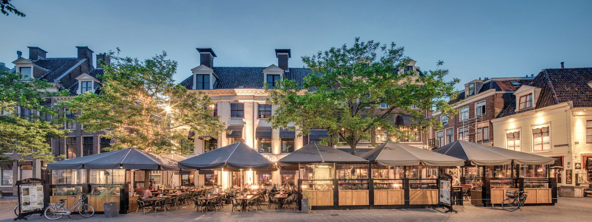

Zo, jij hebt smaak! Je bent namelijk beland op de website van Grand-Café De Walrus, de één-na-leukste plek in de omgeving Leeuwarden en Sneek. Wat zijn dan de leukste plekken? Nou, onze daadwerkelijke Grand-Café’s natuurlijk!
Beide restaurants zijn gevestigd in een groots sfeervol pand, op een prachtige locatie in het centrum. Dé ideale plek voor een lekkere kop koffie, uitgebreide lunch, een heerlijk diner en een gezellige borrel. Dus kom tot rust in de gezelligste drukte van Noord Nederland. Of doe er juist een schepje bovenop en spring zelf op de tafel.
Kom langs of reserveer bij één van onze restaurants en ervaar het zelf!